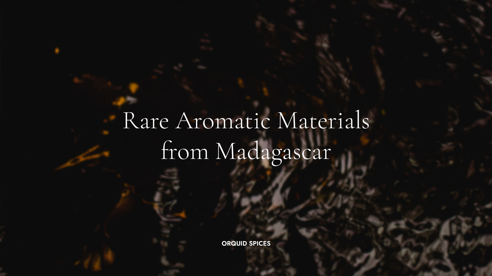
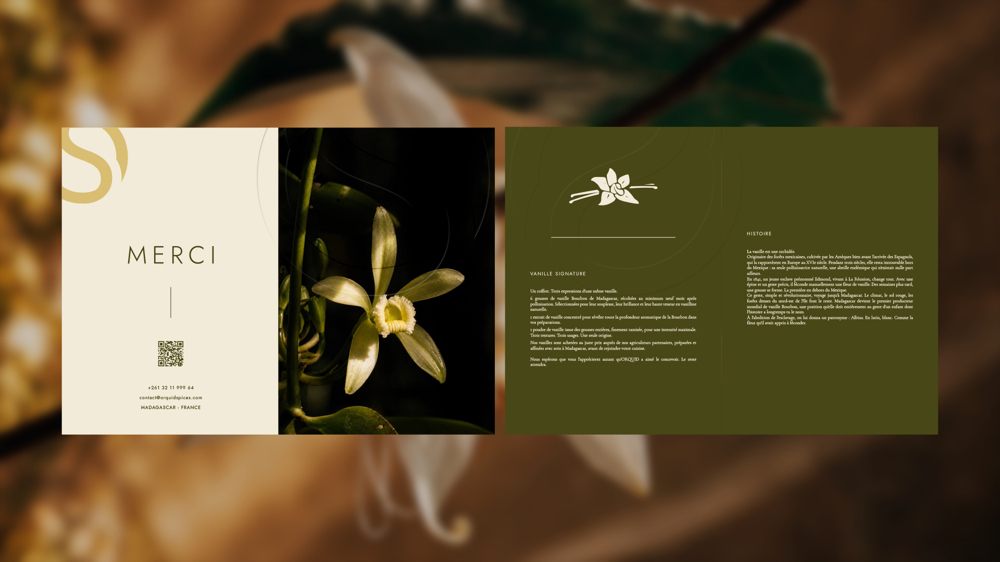
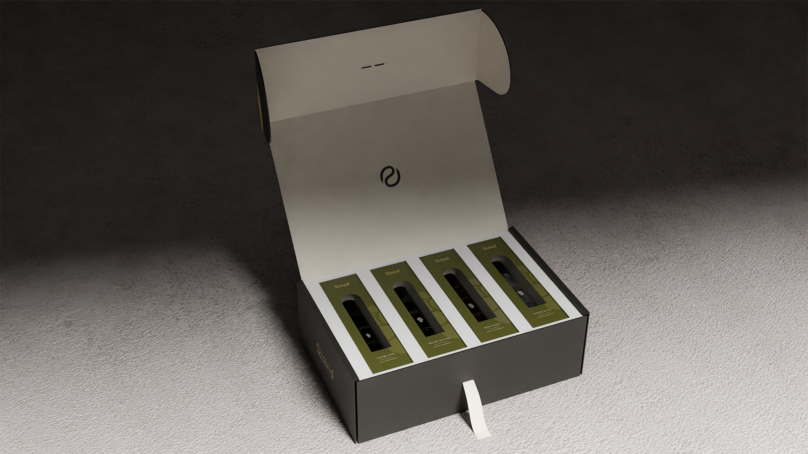
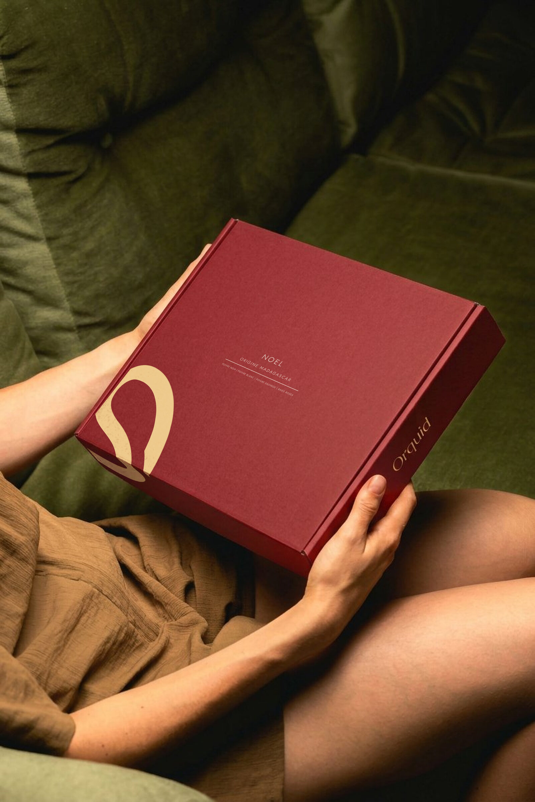
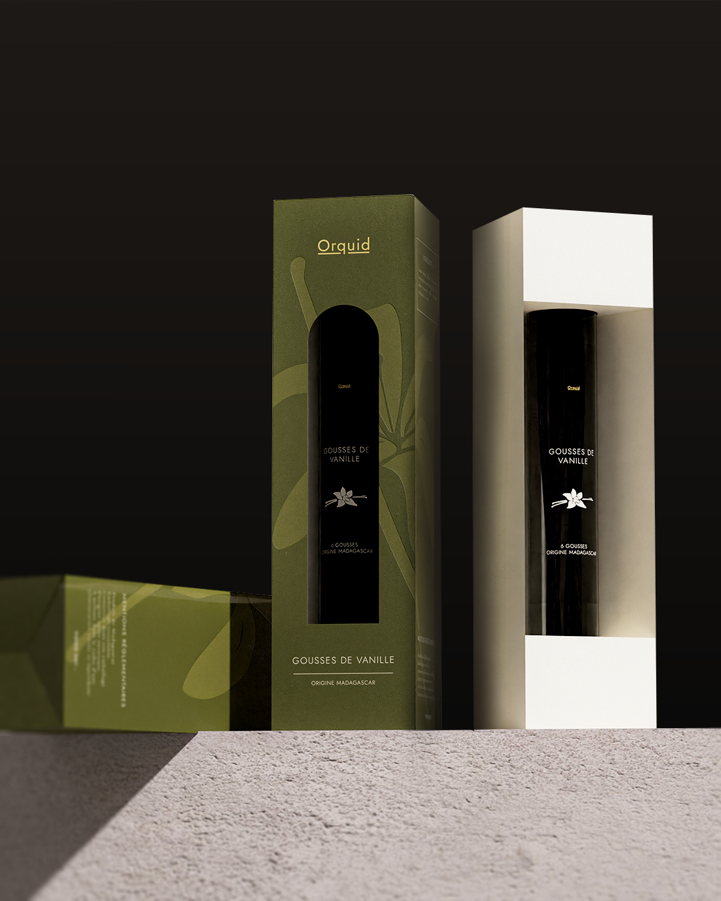
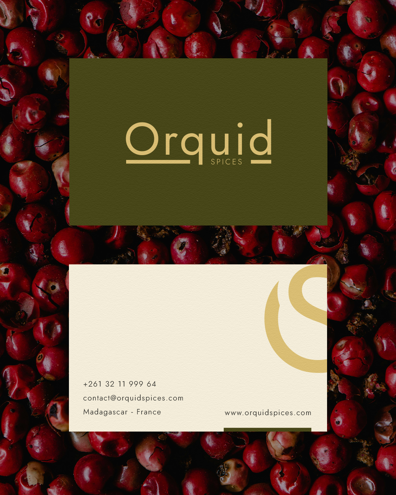
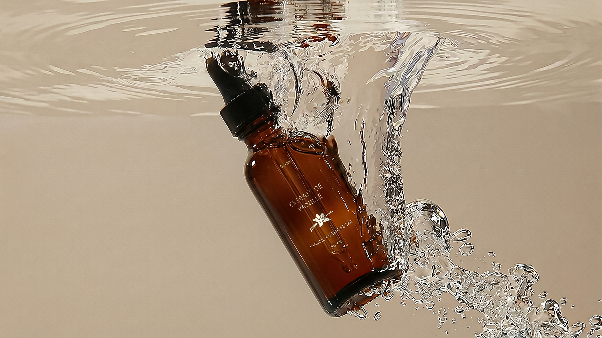

ORQUID SPICES
Identité globale et packaging premium pour épices d'exception.

[ Aperçu du Projet ]
Le projet ORQUID SPICES m'a été confié dans sa globalité. Il s'agissait de construire de zéro l'identité visuelle d'une maison d'épices fines contemporaines fondée à Madagascar, avec un positionnement ancré dans l'univers de la parfumerie de niche et de l'édition haut de gamme. Le défi était de créer quelque chose qui ne ressemble à aucun packaging alimentaire existant, avec un système visuel où le silence, la précision et la matière font tout le travail.
Logotype & Symbole
Le logo adopte un parti pris éditorial fort avec le nom seul, Orquid en Jost Regular et SPICES en capitales très espacées, séparés d'un filet fin. Aucun symbole en façade, juste le nom, typographié avec la rigueur d'une maison qui n'a pas besoin de s'expliquer. Le symbole OS, lui, vit en parallèle avec une fusion continue du O et du S qui évoque à la fois la gousse de vanille enroulée et le mouvement discret du serpent, totem de la marque.
Palette & Charte Graphique
La palette est extraite directement des matières premières avec un vert abyssal profond « #454508 » comme couleur dominante, un crème vanille « #F2EBD9 » en secondaire et un or mat « #D9BD70 » utilisé avec parcimonie sur les finitions et les dorures à chaud. La charte graphique couvre l'ensemble du système avec les typographies Jost et Cormorant Garamond, le motif OS répété, les illustrations botaniques au trait, le sceau circulaire ainsi que les règles d'application sur packaging et digital. Tout a été conçu pour être à la fois premium et industrialisable, parce que le luxe ne vaut rien s'il ne peut pas exister réellement.






Packaging éco-conçu en papier texturé avec marquage à chaud.